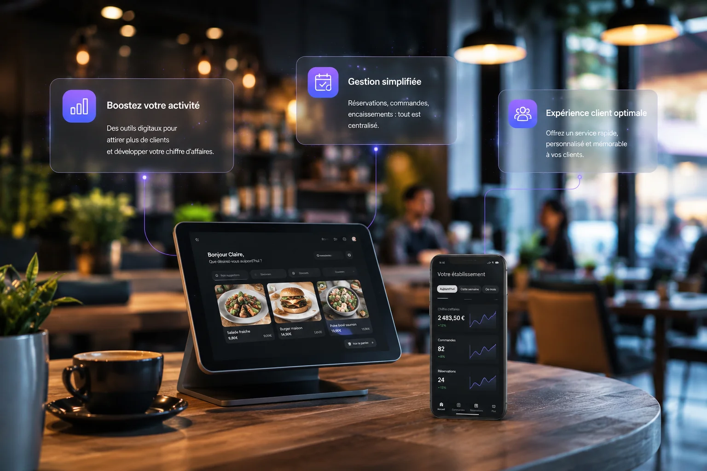

Par Central Web Agency · Mis à jour le

Le site d’un restaurant à Lyon doit permettre de consulter la carte sur mobile, vérifier les horaires et l’accès, puis savoir comment réserver. Une fiche Google peut aider à trouver l’établissement. Le site donne les informations qui permettent de préparer la visite.
La carte et les informations pratiques
- Carte. Publiez les plats et les prix en texte lisible sur mobile, avec les formules et leurs jours de disponibilité. Un PDF peut compléter la page si vous souhaitez proposer un téléchargement.
- Photos. Montrez quelques plats, la salle et la terrasse, selon les espaces réellement proposés.
- Horaires. Distinguez les heures de service, les jours de fermeture et les horaires exceptionnels.
- Accès. Indiquez l’adresse, un repère utile et un numéro cliquable sur mobile. Ajoutez les informations d’accès que vos clients demandent régulièrement.
Vérifiez l’information écrite à mettre à disposition des clients sur les allergènes. La fiche officielle de la DGCCRF sur la restauration présente les obligations des établissements.
Comment vos clients peuvent-ils réserver ?
| Canal | Information à préciser |
|---|---|
| Téléphone | Affichez le numéro et le moment où l’équipe peut répondre. |
| Outil de réservation | Dirigez le client vers le service que vous utilisez et indiquez où consulter la confirmation. |
| Formulaire de demande | Précisez, par exemple pour un groupe, que la demande est examinée et comment le client sera recontacté. |
Si vous renvoyez à une plateforme existante, utilisez son nom actuel. LaFourchette est devenue TheFork. Le choix de l’outil dépend de l’organisation de l’établissement.
Associez votre site et votre fiche Google
Gardez les horaires et les coordonnées cohérents entre les deux supports. Le site peut détailler la carte, la privatisation ou les modalités d’une réservation de groupe. Le guide Google Business Profile explique quelles informations afficher sur la fiche.
Quel budget pour créer le site d’un restaurant ?
Chez CWA, une landing page dès 450 € TTC peut présenter une ouverture ou un événement. Un site one-page dès 650 € TTC peut réunir l’essentiel. Une vitrine multipage dès 950 € TTC permet de séparer la carte, les informations pratiques et la présentation de l’établissement. Un site administrable dès 2 500 € TTC se chiffre sur devis en fonction des contenus et fonctions à gérer.
Le devis de création est gratuit et personnalisé. Après livraison, la maintenance facultative et sans engagement démarre à 39 €/mois pour une vitrine ou 99 €/mois pour un site dynamique. Elle est facturée séparément. Les mises à jour de la carte dépendent du périmètre de la formule choisie.
La fiche de création de site pour restaurant détaille les options de présentation, de réservation et de gestion.